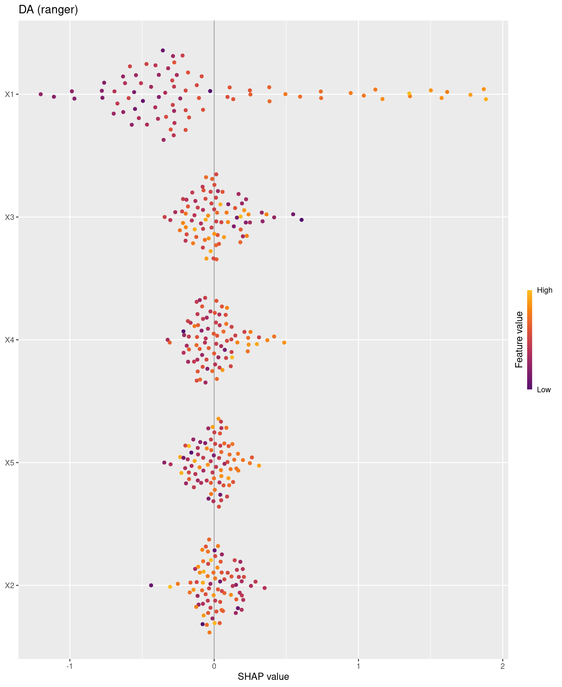
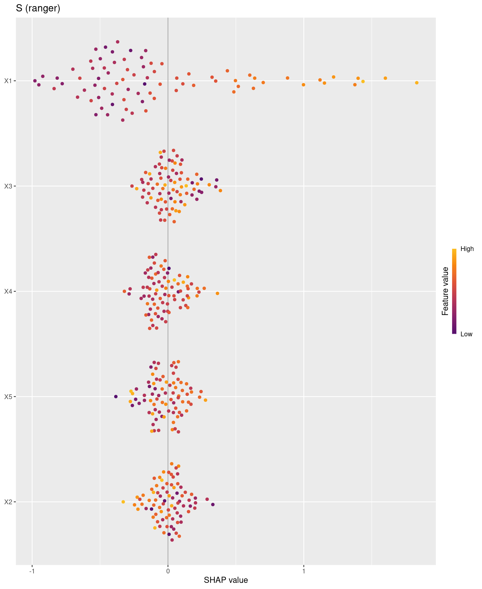
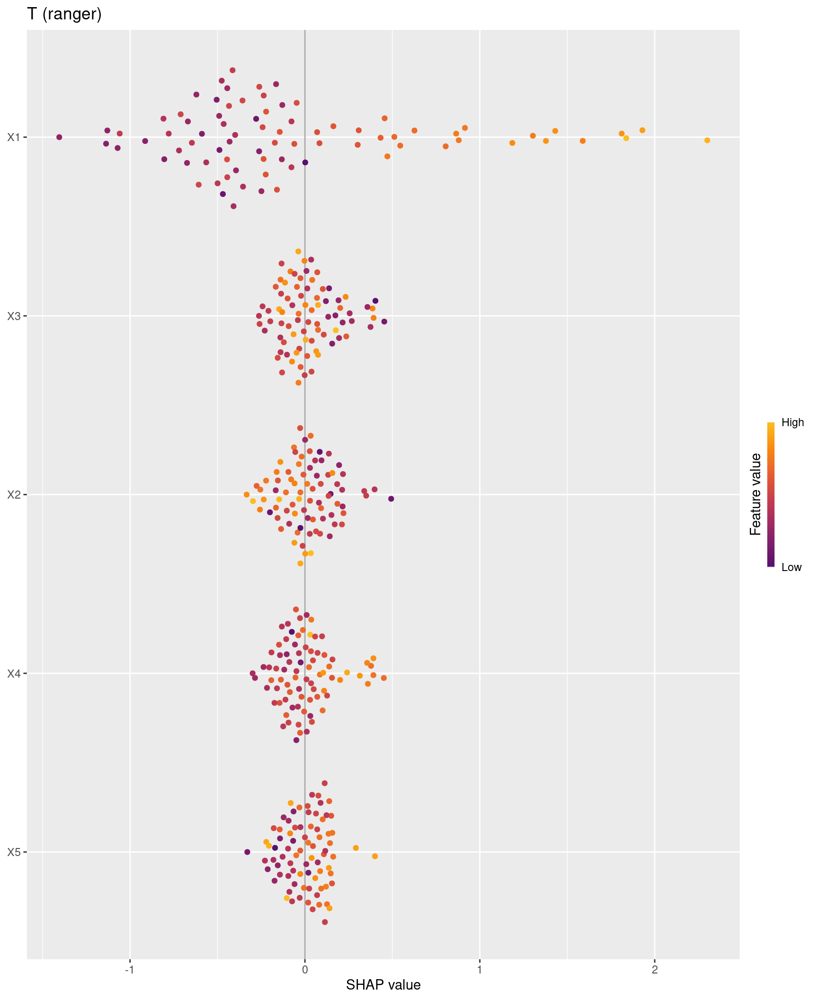
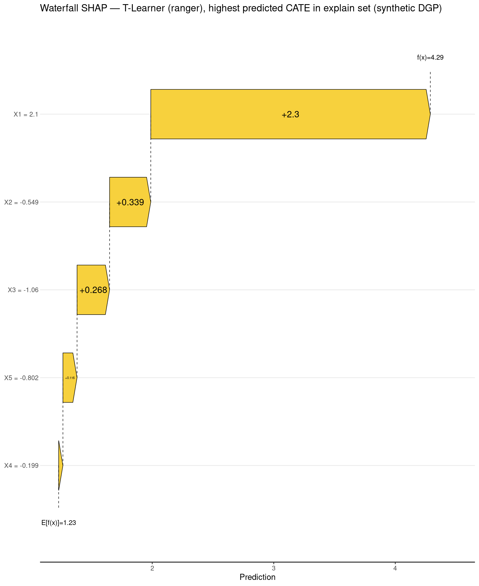

Code
packages <- c(
"tidyverse",
"plyr",
"RCausalML",
"causaldata",
"mlbench",
"xgboost",
"kernelshap",
"shapviz",
"future",
"mlr3",
"mlr3learners",
"nnet",
"gridExtra",
"survival"
)
This notebook demonstrates the Domain Adaptation Learner (DA-Learner), a meta-learner for estimating Conditional Average Treatment Effects (CATE) in the presence of significant domain shift between treatment and control groups. The DA-Learner uses propensity-score-based weighting to adapt the outcome models, making it robust to selection bias and distributional differences. We wwill use RCausalML’s DomainAdaptationLearner to implement this method on a real dataset, showcasing its advantages over standard meta-learners in scenarios with strong domain shift.
The Domain Adaptation Learner (DA-Learner, implemented as DomainAdaptationLearner in EconML) is a meta-learner for estimating the Conditional Average Treatment Effect:
\[\tau(x) = \mathbb{E}[Y(1) - Y(0) \mid X = x]\]
from observational data. It is designed specifically for settings where the covariate distributions of the treated and control groups differ substantially — a condition variously described as covariate shift, domain shift, or selection bias — and where standard meta-learners consequently produce biased counterfactual predictions.
The T-Learner fits separate outcome models \(\hat{\mu}_1(x)\) and \(\hat{\mu}_0(x)\) on the treated and control subsamples, then estimates the CATE as their difference. This works well when the two groups are exchangeable in covariate distribution. In observational studies, however, treatment assignment is typically confounded: units that receive treatment are systematically different from those that do not. When covariate distributions diverge, the outcome model trained on one group must extrapolate to predict counterfactuals for the other group — a region of the covariate space it has not seen during training. This extrapolation degrades prediction quality and biases the resulting CATE estimates.
The DA-Learner addresses this by reweighting each group’s training distribution to resemble the other group’s distribution before fitting the outcome models, making counterfactual predictions more reliable. In this sense it is best understood as a distribution-aligned extension of the T-Learner, closely related in spirit to the X-Learner but with an explicit domain adaptation motivation.
Estimate the propensity score \(\hat{g}(x) = \hat{P}(T = 1 \mid X = x)\) using any classifier — logistic regression, random forest, gradient boosting. The propensity score quantifies how similar or different the two groups are at each point in the covariate space and serves as the basis for the importance weights in the next step.
This is the defining step of the DA-Learner. Rather than fitting \(\hat{\mu}_0\) and \(\hat{\mu}_1\) on their respective raw subsamples, each model is trained with importance weights that tilt its training distribution toward the opposite group:
Control outcome model \(\hat{\mu}_0\): fit on control units (\(T_i = 0\)) with sample weights
\[w_i^0 = \frac{\hat{g}(X_i)}{1 - \hat{g}(X_i)}\]
Multiplying control observations by \(\hat{g}/(1-\hat{g})\) — the odds of treatment — upweights control units whose covariates resemble the treated population and downweights those that are unrepresentative of it. The resulting model is calibrated to predict \(Y(0)\) accurately for individuals whose covariate profiles are typical of the treated group, which is precisely what is needed for counterfactual imputation.
Treatment outcome model \(\hat{\mu}_1\): fit on treated units (\(T_i = 1\)) with sample weights
\[w_i^1 = \frac{1 - \hat{g}(X_i)}{\hat{g}(X_i)}\]
Symmetrically, this tilts the treated training distribution toward the control population, improving counterfactual accuracy for control units.
Any ML regressor may be used for both models. The importance-weighting scheme is an instance of covariate shift correction from the domain adaptation literature: when the source domain (the group used for training) and the target domain (the group for which predictions are needed) have different marginal distributions over \(X\), reweighting training observations by the density ratio \(p_{\text{target}}(x) / p_{\text{source}}(x)\) recovers consistency of the trained model on the target distribution. The propensity-score-based weights are proportional to this density ratio under standard regularity conditions.
Using the domain-adapted outcome models, impute a treatment effect residual for each observed unit:
\[\hat{D}_i^1 = Y_i - \hat{\mu}_0(X_i) \quad \text{for treated units } (T_i = 1)\]
\[\hat{D}_i^0 = \hat{\mu}_1(X_i) - Y_i \quad \text{for control units } (T_i = 0)\]
Each residual approximates the individual treatment effect for that unit: \(\hat{D}_i^1\) is the excess outcome of a treated unit above what the adapted control model predicts they would have experienced under control; \(\hat{D}_i^0\) is the gain a control unit would have obtained had they been treated, according to the adapted treatment model. These pseudo-effects play the same structural role as the imputed treatment effects in the X-Learner, but benefit from the distribution alignment performed in Step 2.
Pool the pseudo-effects and their associated covariates across both groups and fit a single regression model \(\hat{\tau}\):
\[\hat{\tau} = M_3\!\left(\{\hat{D}_i^0, X_i\}_{T_i=0} \cup \{\hat{D}_i^1, X_i\}_{T_i=1}\right)\]
This final model directly estimates \(\tau(x)\) as a smooth function of \(x\), combining information from both groups. Any flexible regressor may be used for \(M_3\).
The complete procedure in compact notation:
\[\hat{\mu}_0 = M_1\!\left(Y \sim X,\ \text{weights} = \frac{\hat{g}(X)}{1 - \hat{g}(X)},\ T=0\right)\]
\[\hat{\mu}_1 = M_2\!\left(Y \sim X,\ \text{weights} = \frac{1 - \hat{g}(X)}{\hat{g}(X)},\ T=1\right)\]
\[\hat{D}^1 = Y^1 - \hat{\mu}_0(X^1), \qquad \hat{D}^0 = \hat{\mu}_1(X^0) - Y^0\]
\[\hat{\tau} = M_3\!\left(\hat{D} \sim X,\ \text{data} = \{(X^0, \hat{D}^0)\} \cup \{(X^1, \hat{D}^1)\}\right)\]
where \(M_1, M_2, M_3\) are arbitrary ML regressors and \(\hat{g}(x)\) is the estimated propensity score.
The DA-Learner occupies a natural position in the meta-learner family. Like the T-Learner, it fits separate outcome models per arm. Like the X-Learner, it constructs pseudo-effects by cross-imputing counterfactuals and regresses them onto covariates in a final stage. Its distinguishing feature is the explicit use of importance weighting to align training distributions before outcome model fitting — a step that neither the T-Learner nor the standard X-Learner performs.
Relative to the R-Learner and DR-Learner, the DA-Learner does not directly target an orthogonalized or doubly robust objective. It does not enjoy the Neyman-orthogonality property that makes the R-Learner robust to nuisance misspecification, nor the formal double robustness guarantee of the DR-Learner. Its practical advantage lies instead in robustness to distributional mismatch: when covariate shift is severe and extrapolation by un-reweighted outcome models is the primary source of bias, the domain adaptation weighting provides a more targeted correction than generic orthogonalization.
Propensity score quality: The importance weights \(\hat{g}/(1-\hat{g})\) and \((1-\hat{g})/\hat{g}\) can become extreme when the propensity score is near 0 or 1. In such regions, a small number of observations receive very large weights, destabilizing the outcome model fit. Weight trimming or clipping — replacing extreme weights with a fixed upper bound — is standard practice and can substantially improve stability with minimal bias cost.
Overlap assumption: The DA-Learner, like all meta-learners, requires that both treatment and control units are observed across the relevant covariate support. In regions where \(\hat{g}(x) \approx 0\) or \(\hat{g}(x) \approx 1\), counterfactual predictions are extrapolations regardless of weighting, and CATE estimates in those regions should be interpreted with caution.
Choice of base learners: The weighting scheme changes the effective training distribution seen by \(M_1\) and \(M_2\), which can interact with the regularization behavior of the base learner. Tree-based methods are generally robust to this, but linear models with strong regularization may still underfit the reweighted distribution in high-curvature regions.
RCausalML provides an implementation of the DA-Learner through the DomainAdaptationLearner class. Below is an example of how to use it:
Following R packages are required to run this notebook. If any of these packages are not installed, you can install them using the code below:
tidyverse, plyr, RCausalML, causaldata, mlbench, xgboost, kernelshap, shapviz, future, mlr3, mlr3learners, nnet, gridExtra, survival
packages <- c(
"tidyverse",
"plyr",
"RCausalML",
"causaldata",
"mlbench",
"xgboost",
"kernelshap",
"shapviz",
"future",
"mlr3",
"mlr3learners",
"nnet",
"gridExtra",
"survival"
)# Install missing packages
# new_packages <- packages[!(packages %in% installed.packages()[, "Package"])]
# if (length(new_packages)) install.packages(new_packages)# Verify installation
cat("Installed packages:\n")Installed packages: tidyverse plyr RCausalML causaldata mlbench xgboost
TRUE TRUE TRUE TRUE TRUE TRUE
kernelshap shapviz future mlr3 mlr3learners nnet
TRUE TRUE TRUE TRUE TRUE TRUE
gridExtra survival
TRUE TRUE # Load packages with suppressed messages
invisible(lapply(packages, function(pkg) {
suppressPackageStartupMessages(library(pkg, character.only = TRUE))
}))# Check loaded packages
cat("Successfully loaded packages:\n")Successfully loaded packages: [1] "package:survival" "package:gridExtra" "package:nnet"
[4] "package:mlr3learners" "package:mlr3" "package:future"
[7] "package:shapviz" "package:kernelshap" "package:xgboost"
[10] "package:mlbench" "package:causaldata" "package:RCausalML"
[13] "package:plyr" "package:lubridate" "package:forcats"
[16] "package:stringr" "package:dplyr" "package:purrr"
[19] "package:readr" "package:tidyr" "package:tibble"
[22] "package:ggplot2" "package:tidyverse" "package:stats"
[25] "package:graphics" "package:grDevices" "package:utils"
[28] "package:datasets" "package:methods" "package:base" Synthetic data with confounded treatment (propensity depends on \(X_1\) via a logistic link) and an outcome that depends on treatment and \(X_1\), matching the usual Python sketch:
\(T \sim \mathrm{Bernoulli}(\mathrm{expit}(X_1))\), \(y = (1 + 0.5 X_1) T + X_1 + \varepsilon\).
set.seed(123)
n <- 1000L
p <- 5L
X <- matrix(rnorm(n * p), nrow = n, ncol = p)
colnames(X) <- paste0("X", seq_len(p))
# Treatment w corresponds to Python T; avoid naming it `T` in R (conflicts with TRUE).
w <- rbinom(n, 1L, prob = stats::plogis(X[, 1L]))
y <- (1 + 0.5 * X[, 1L]) * w + X[, 1L] + stats::rnorm(n)Dimensions: 1000 observations, 5 covariates; treatment rate 0.503.
For this DGP the conditional treatment effect is linear in the first covariate only:
\[ \tau(x) = \mathbb{E}[Y(1) - Y(0) \mid X = x] = 1 + 0.5 x_1. \]
We use that closed form for validation (holdout RMSE / correlation). The population average effect is \(\mathbb{E}[\tau(X)] = 1\) when \(X_1 \sim \mathcal{N}(0,1)\).
DomainAdaptationLearner
The EconML DomainAdaptationLearner takes three estimator choices. RCausalML uses the same stages but names the constructor arguments after the base learner string you pass in (not arbitrary sklearn objects):
| EconML argument | Role | RCausalML argument |
|---|---|---|
models |
Weighted outcome models \(\hat\mu_0\), \(\hat\mu_1\) on each arm (must support sample weights) |
learner ("lm", "ranger", "glmnet", "xgb") |
final_models |
One regressor per non-control treatment: fits pseudo–treatment effects \(\hat D\) on \(X\) to get \(\hat\tau(x)\) |
final_learner (same options; default copies learner) |
propensity_model |
Classifier for \(P(T=\text{arm}\mid X)\) vs control on the pooled \(\{\text{control},\text{arm}\}\) sample |
propensity_learner ("glm" or "glmnet") |
After fit(), the fitted objects are stored as dal$final_models (list, one element per treatment level vs control_name) and dal$propensity_models (list, parallel: arm-vs-control propensity fit used for weights in that arm’s loop).
# EconML: models=..., final_models=..., propensity_model=...
dal <- DomainAdaptationLearner(
learner = "lm", # weighted outcome models (EconML `models`)
final_learner = "lm", # pseudo-effects on X -> CATE (EconML `final_models`)
propensity_learner = "glm", # P(arm|X) vs control (EconML `propensity_model`)
control_name = 0
)
dal <- fit(dal, X, w, y)
tau_hat <- predict(dal, X)
head(tau_hat, 10L) [1] 0.5222568 0.7576636 1.9825196 1.1938215 0.9657532 2.0184526 1.1649415
[8] 0.2624011 0.7545257 0.5723235final_models and propensity_models
Treatment arms (non-control): 1 cat("final_models — estimators for pseudo-treatment effects (one list slot per arm):\n")final_models — estimators for pseudo-treatment effects (one list slot per arm): arm 1: type = lm
(Intercept) X1 X2 X3 X4 X5
0.99052544 0.65578950 0.06428347 0.05763681 -0.02867175 -0.05862932 cat("\npropensity_models — fitted propensity for each arm vs control:\n")
propensity_models — fitted propensity for each arm vs control:for (i in seq_along(dal$propensity_models)) {
pm <- dal$propensity_models[[i]]
cat(" arm ", dal$t_groups[i], " vs control: type = ", pm$type, "\n", sep = "")
if (identical(pm$type, "glm")) {
print(stats::coef(pm$model))
} else if (identical(pm$type, "glmnet")) {
print(as.matrix(glmnet::coef(pm$model, s = "lambda.1se")))
}
} arm 1 vs control: type = glm
(Intercept) X1 X2 X3 X4 X5
0.007634979 1.025476183 -0.047217215 0.020747826 0.067373241 0.115107547 estimate_ate)ate_dal <- estimate_ate(dal, X, w, y, pretrain = TRUE, return_ci = TRUE, bootstrap_ci = FALSE)
print(ate_dal)$ate
1
1.004821
$ate_lb
1
0.9638222
$ate_ub
1
1.04582
Population ATE (theory): 1.0
Sample mean true tau(X): 1.008064Split the data, fit only on the training half, predict on the test set, and compare to \(1 + 0.5 X_1\). We also fit a plain T-Learner (TLearner in the same file) for contrast when selection bias is strong.
set.seed(456)
idx <- sample.int(n, n)
n_te <- floor(0.3 * n)
te_idx <- idx[seq_len(n_te)]
tr_idx <- idx[-seq_len(n_te)]
true_tau <- function(Xm) 1 + 0.5 * Xm[, 1L]
X_tr <- X[tr_idx, , drop = FALSE]
w_tr <- w[tr_idx]
y_tr <- y[tr_idx]
X_te <- X[te_idx, , drop = FALSE]
tau_te <- true_tau(X_te)
dal_v <- DomainAdaptationLearner(
learner = "lm", # weighted outcome models (EconML `models`)
final_learner = "lm", # pseudo-effect on X (EconML `final_models`)
propensity_learner = "glm", # propensity ê(x) (EconML `propensity_model`)
control_name = 0
)
dal_v <- fit(dal_v, X_tr, w_tr, y_tr)
pred_da <- as.numeric(predict(dal_v, X_te))
tl_v <- TLearner(learner = "lm", control_name = 0)
tl_v <- fit(tl_v, X_tr, w_tr, y_tr)
pred_tl <- as.numeric(predict(tl_v, X_te))
rmse <- function(a, b) sqrt(mean((a - b)^2))
mae <- function(a, b) mean(abs(a - b))
val_tbl <- tibble::tibble(
learner = c("DomainAdaptationLearner", "TLearner"),
RMSE = c(rmse(pred_da, tau_te), rmse(pred_tl, tau_te)),
MAE = c(mae(pred_da, tau_te), mae(pred_tl, tau_te)),
cor_true = c(cor(pred_da, tau_te), cor(pred_tl, tau_te))
)
print(val_tbl)# A tibble: 2 × 4
learner RMSE MAE cor_true
<chr> <dbl> <dbl> <dbl>
1 DomainAdaptationLearner 0.126 0.0986 0.995
2 TLearner 0.149 0.119 0.965viz <- tibble::tibble(
true_tau = tau_te,
DA_Learner = pred_da,
T_Learner = pred_tl
) |>
tidyr::pivot_longer(-true_tau, names_to = "method", values_to = "predicted")
ggplot2::ggplot(viz, ggplot2::aes(x = true_tau, y = predicted, color = method)) +
ggplot2::geom_point(alpha = 0.35, size = 1.2) +
ggplot2::geom_abline(intercept = 0, slope = 1, linetype = 2, color = "gray40") +
ggplot2::coord_fixed() +
ggplot2::theme_bw() +
ggplot2::labs(
x = expression("True " * tau * (x)),
y = expression("Predicted " * hat(tau) * (x)),
color = NULL
)
As in the binary-treatment meta-learner notebook (Part C there), we attribute predicted \(\hat{\tau}(X)\) from each fitted meta-learner to covariates using permutation SHAP (explain_cate(..., use_permshap = TRUE)). Background and explanation rows are drawn only from the training split (X_tr) defined in the holdout section above. The X-Learner is fit without a fixed propensity vector, so predict() evaluates learned \(e(X)\) on any newdata, which kernelshap requires when features are perturbed. Parallel workers use the same future / parallel / parallel_args pattern as that notebook, with ranger included in parallel_args$packages for the DA-, S-, and T-learners, and xgboost / glmnet for the X-Learner (stage-2 surfaces and glmnet propensity).
fast_run <- Sys.getenv("CAUSALML_FAST_RENDER", "TRUE") == "TRUE"
has_ks_da <- requireNamespace("kernelshap", quietly = TRUE)
has_sv_da <- requireNamespace("shapviz", quietly = TRUE)
shp_list_da <- NULL
X_explain_da <- NULL
if (!has_ks_da || !has_sv_da) {
message("Skipping SHAP: install.packages(c(\"kernelshap\", \"shapviz\")) to run this section.")
} else if (!exists("X_tr") || nrow(X_tr) < 30L) {
message("Skipping SHAP: run the holdout chunk first so X_tr is defined with enough rows.")
} else {
suppressPackageStartupMessages({
library(kernelshap)
library(shapviz)
})
num_trees_shap <- if (fast_run) 80L else 200L
nrounds_x_shap <- if (fast_run) 40L else 80L
learner_da_shap <- fit(
DomainAdaptationLearner(
learner = "ranger",
final_learner = "ranger",
propensity_learner = "glm",
control_name = 0
),
X_tr, w_tr, y_tr,
num.trees = num_trees_shap
)
learner_s_shap <- fit(
SLearner(learner = "ranger", control_name = 0),
X_tr, w_tr, y_tr,
num.trees = num_trees_shap
)
learner_t_shap <- fit(
TLearner(learner = "ranger", control_name = 0),
X_tr, w_tr, y_tr,
num.trees = num_trees_shap
)
learner_x_shap <- fit(
XLearner(learner = "xgb", control_name = 0),
X_tr, w_tr, y_tr,
nrounds = nrounds_x_shap
)
set.seed(4242)
n_explain_da <- if (fast_run) 80L else 200L
bg_size_da <- if (fast_run) 100L else min(300L, nrow(X_tr))
n_explain_da <- min(n_explain_da, nrow(X_tr))
bg_size_da <- min(bg_size_da, nrow(X_tr))
idx_ex_da <- sample.int(nrow(X_tr), n_explain_da)
bg_idx_da <- sample.int(nrow(X_tr), bg_size_da)
X_explain_da <- as.data.frame(X_tr[idx_ex_da, , drop = FALSE])
bg_X_da <- as.data.frame(X_tr[bg_idx_da, , drop = FALSE])
has_future_da <- requireNamespace("future", quietly = TRUE)
n_workers_shap_da <- if (has_future_da) {
min(4L, future::availableCores(omit = 1L))
} else {
1L
}
use_parallel_shap_da <- isTRUE(n_workers_shap_da > 1L)
if (use_parallel_shap_da) {
shap_plan_old_da <- future::plan()
on.exit(future::plan(shap_plan_old_da), add = TRUE)
future::plan(future::multisession, workers = n_workers_shap_da)
}
meta_da_shap <- list(
"DA (ranger)" = learner_da_shap,
"S (ranger)" = learner_s_shap,
"T (ranger)" = learner_t_shap,
"X (xgb, learned e(X))" = learner_x_shap
)
shap_parallel_args_da <- if (use_parallel_shap_da) {
list(packages = c("RCausalML", "ranger", "xgboost", "glmnet"))
} else {
NULL
}
shap_list_da <- vector("list", length(meta_da_shap))
names(shap_list_da) <- names(meta_da_shap)
for (i in seq_along(meta_da_shap)) {
shap_list_da[[i]] <- explain_cate(
meta_da_shap[[i]],
X = X_explain_da,
bg_X = bg_X_da,
use_permshap = TRUE,
verbose = FALSE,
parallel = use_parallel_shap_da,
parallel_args = shap_parallel_args_da
)
}
shp_list_da <- lapply(shap_list_da, function(ks) shapviz::shapviz(ks, X = X_explain_da))
imp_rows_da <- lapply(names(shap_list_da), function(lab) {
ks <- shap_list_da[[lab]]
S_mat <- as.matrix(ks$S)
data.frame(
feature = colnames(ks$X),
mean_abs_shap = colMeans(abs(S_mat)),
learner = lab,
stringsAsFactors = FALSE
)
})
imp_df_da <- dplyr::bind_rows(imp_rows_da)
p_imp_da <- ggplot2::ggplot(imp_df_da, ggplot2::aes(x = reorder(feature, mean_abs_shap), y = mean_abs_shap)) +
ggplot2::geom_col(fill = "steelblue", width = 0.75) +
ggplot2::facet_wrap(~learner, scales = "free_y", ncol = 2) +
ggplot2::coord_flip() +
ggplot2::labs(
title = "Synthetic DGP: mean |SHAP| for predicted CATE by meta-learner (train subsample)",
x = NULL,
y = "Mean |SHAP|"
) +
ggplot2::theme_bw() +
ggplot2::theme(strip.text = ggplot2::element_text(face = "bold"))
print(p_imp_da)
}
if (!is.null(shp_list_da) && length(shp_list_da) > 0) {
for (lab in names(shp_list_da)) {
print(
shapviz::sv_importance(shp_list_da[[lab]], kind = "beeswarm") +
ggplot2::ggtitle(lab)
)
}
pred_t_da <- as.numeric(predict(learner_t_shap, as.matrix(X_explain_da)))
row_hi_da <- which.max(pred_t_da)
print(
shapviz::sv_waterfall(shp_list_da[["T (ranger)"]], row_id = row_hi_da) +
ggplot2::ggtitle(
"Waterfall SHAP — T-Learner (ranger), highest predicted CATE in explain set (synthetic DGP)"
)
)
}




This notebook introduced the Domain Adaptation Learner (DA-Learner) for estimating conditional average treatment effects (CATE) when treatment and control groups can differ systematically in covariate distributions (selection bias / domain shift). We mapped EconML’s models, final_models, and propensity_model to RCausalML’s learner, final_learner, and propensity_learner, and showed how fit() stores fitted final_models and propensity_models for inspection.
On a synthetic confounded DGP with closed-form \(\tau(x) = 1 + 0.5 x_1\), we fit DomainAdaptationLearner, reported ATE via estimate_ate(), and validated predictions on a holdout split against the true CATE (RMSE, MAE, correlation), alongside a plain T-Learner for contrast. Permutation SHAP via explain_cate(..., use_permshap = TRUE) on a training subsample illustrated which covariates drive predicted \(\hat{\tau}(X)\) for DA-, S-, T-, and X-learners (with parallel future workers and parallel_args$packages where applicable). SHAP values summarize the fitted surfaces, not additional causal identification beyond the assumptions already encoded in the estimators.
DomainAdaptationLearner — Python reference implementation and API (models, final_models, propensity_model).RCausalML::explain_cate().sv_importance, sv_waterfall, beeswarm plots).